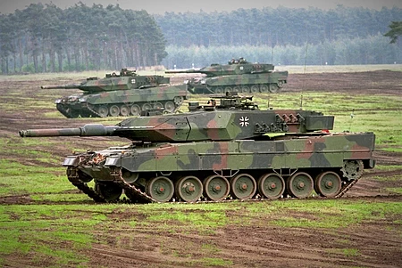

Leopard 2
Leopard 2 (укр. Леопард 2) — основний бойовий танк, створений німецьким підприємством Краус-Мафай, (тепер Krauss-Maffei Wegmann, KMW). Leopard 2 став наступником успішної розробки тієї ж фірми — основного бойового танку Leopard 1.
Виробництво Leopard 2 розпочалось у 1979 році. Взятий на озброєння збройних сил Австрії, Канади, Чилі, Данії, Фінляндії, Німеччини, Греції, Нідерландів, Норвегії, Польщі, Португалії, Сінгапуру, Швейцарії, Швеції, Іспанії та Туреччини. Всього було випущено 3200 танків цієї моделі.
У червні 2010 року KMW представила модифікацію Leopard 2 A7+. Нова модель пройшла випробування та взята на озброєння збройними силами Німеччини. Основними нововведеннями стали модульна система захисту, поліпшена живучість та маневреність.
У липні 2011 року німецька рада безпеки схвалила контракт на поставку близько 200 одиниць Leopard 2 A7+ до Саудівської Аравії.
Бундесвер мав на озброєнні у 1990 році 2125 танків Leopard 2, але до 2008 їхня кількість була скорочена до 350 машин. Програмою подальшого переозброєння передбачено скоротити їхню кількість до 225[3].
Модифікація А6 з довшою гарматою взята на озброєння у 2001 році. У 2015 році плани щодо скорочення змінилися і тепер число танків Leopard 2 у Бундесвері має бути доведено до 338[4].
Зміст
Історія
Розробка
Роботи над танком почались з розробки Leopard 1 спільно з Францією в 1950-ті,[5] однак згодом співпраця припинилась. Попри те, що танк Leopard 1 було прийнято на озброєння в ФРН у 1965 році, німці були зацікавлені у створенні покращеного танка у наступному десятилітті. Це вилилося у програму з розробки танка MBT-70 спільно з американцями яка розпочалась у 1963 році.[6] Однак вже у 1967 виникло питання чи буде прийнято MBT-70 на озброєння. Тому німецький уряд видав наказ на проведення досліджень з покращення танка Leopard 1 німецькій компанії Porsche у 1967 році.[7] Ця розробка отримала назву нім. vergoldeter Leopard (Позолочений Леопард) і була зосереджена на залученні покращених технологій у конструкцію танка Leopard. Проект передбачав наявність автомата заряджання, спареної автоматичної гармати і незалежного командирського перископу.[8] Зенітним кулеметом можна було користуватись зсередини танку, а також було застосовано телевізійну камеру на висувній щоглі для спостереження. Форма башти і корпусу передбачала використання литої сталевої броні, також було покращено підвіску, трансмісію та систему пожежогасіння.[9]
Експорт
Німеччина мала на озброєнні 2125 ОБТ Leopard 2 різних версій, але після возз'єднання Німеччини більшість з них була продана. Інші країни вимагали нових або побудованих у себе танків.
Королівська Нідерландська армія замовила 445 танків Leopard 2 у березні 1979, після вивчення результатів тестування Leopard 2AV і США.[39] Вона стала першим закордонним користувачем танка Leopard 2. Машини надійшли на озброєння з липня 1981 по червень 1986. Швейцарська армія обрала Leopard 2 замість M1A1 Abrams після випробувань, які тривали з серпня 1981 по червень 1982. Швейцарія прийняла рішення 24 серпня 1983, а фінансування було підтверджене урядом у 1984.[40] У червні 1987 року 35 машин були представлені Kraus-Maffei, а у грудні 1987 компанія Eidgenössische Konstruktionswerkstätte у Туні розпочала ліцензійне виробництво 345 машин.
Конструкція
Броня
Основним бронезахистом танку Leopard 2 є композитна броня.[58] Броня складається з поєднання сталевих плит різного ступеню загартування, еластичних та не металічних матеріалів.[59][60][61] Використані сталеві пластини з високою твердістю та пластичністю. Броня є результатом досліджень механізму формування і проникнення кумулятивних зарядів.[62] Броня Leopard 2 можливо базується на британській броні Чобгем, яку демонстрували у ФРН в 1970 році.[63] Згодом, у середині 1970-х, повна інформація по цій броні була передана уряду ФРН. Верхня лобова деталь танка Leopard 2 розроблена для протистояння бронебійним снарядам великих калібрів і протидії кумулятивним зарядам.[61] Протягом 1980-х, було виявлено, що лобова броня танка Leopard 2 може протистояти 125 мм БОПС на дистанції 1500 м.[62][64]
Озброєння
Основним озброєнням серійної версії танка Leopard 2 є 120 мм гладкоствольна гармата Rheinmetall — така сама, що встановлена на танк M1 Abrams — у обох варіантах — L44 (на всіх танках Leopard 2 до моделі A5) або L55 (починаючи з Leopard 2A6 і далі).[66] Боєзапас гармати складається з 27 снарядів які зберігаються у спеціальному магазині у носовій частині корпусу, ліворуч від водія, додаткові 15 снарядів зберігаються у кормі башти ліворуч і відокремлені від бойового відділення електрично-керованими дверцятами .[66] При ураженні боєукладки, вибухові панелі спрямують вибух назовні для захисту екіпажу.
Двигун
Leopard 2 має дизельний двигун MTU MB 873, потужністю 1500 к.с. Дизельний двигун MTU MB 873 чотиритактний, робочий об'єм дорівнює 47,6 літрам, багатопаливний 12-циліндровий, з турбонаддувом, рідинного охолодження, розрахункова витрата палива складає 300 літрів на 100 км по дорозі та 500 літрів на 100 км по пересічній місцевості. Коробка передач Renk HSWL 354 та гальмівною системою.[66][84] Трансмісія Renk HSWL 354 має чотири передніх і дві задніх передачі, з гідродинамічною передачею і є повністю автоматичною.[66] Leopard 2 має чотири паливних бака, загальним об'ємом 1160 літрів, що дає максимальну дальність ходу 500 км.[66] Двигун дозволяє розвинути швидкість на дорозі 68 км/год (лімітована законом швидкість у цивільний час 50 км/год) і швидкість заднього ходу 31 км/год.[66] Двигун можна замінити у польових умовах за 35 хвилин.[66] Двигун і трансмісія відокремлені від бойового відсіку пожежо-тривкою переборкою.[84] Покращена версія двигуна EuroPowerPack, потужністю 1650 к.с., MTU MT883 також була випробована на Leopard 2.[84]
Варіанти
Leopard 2
Основний танк Leopard 2, інколи, для того щоб відрізнити від інших машин серії, називають «A0». Танки випускалися з жовтня 1979 до березня 1982, всього 380 машин. 209 побудували Krauss Maffei та 171 — MaK. Основне обладнання складається з електро-гідравлічного стабілізатора WNA-H22, комп'ютера керування вогнем, лазерного далекоміру, датчика вітру, перископу загального призначення EMES 15, панорамного перископу PERI R17, баштового прицілу FERO Z18, на даху башти, а також з комп'ютерним керуванням тестування танком RPP 1–8. 200 машин мають підсилювач низького освітлення (PZB 200) замість тепловізора. Два корпуси використано для навчання водіїв.
Leopard 2A1
Мінімальні модифікації і встановлення тепловізійного прицілу стрільця[86] були зроблені у другій партії з 450 машин Leopard 2 які отримали назву A1; 248 створені Krauss-Maffei (номери шасі з 10211 по 10458) та 202 — Mak (номери шасі з 20173 по 20347). Поставки машин моделі 2A1 було розпочато у березні 1982 і завершено у листопаді 1983. Двома значними змінами стали: боєукладка як на танку M1 Abrams і перероблені паливні баки для зменшення часу заправки. Третя партія з 300 Leopard 2 — 165 від Krauss-Maffei (номери шасі з 10459 по 10623) та 135 — MaK (номери шасі з 20375 по 20509.) — були випущені у період з листопада 1983 по листопад 1984. Ця партія мала незначні зміни які отримали і раніше випущені 2A1.
Бойове застосування
28 машин Leopard 2A5 були використані 12 червня 1999 під час введення сил КФОР у Косово. Машини 33 і 214 танкових батальйонів вирушили з Македонії до Призрені. Танки були використані для охорони баз та патрулів, а також на контрольно-пропускних і спостережних пунктах в рамках кампанії демонстрації сили. ЗМІ повідомляли про інцидент за участю танку 13 червня 1999[116], коли два сербських бойовики з машини Лада відкрили вогонь по одному з контрольно-пропускних пунктів у Прізрені. Оскільки екіпаж перебував на борту не повному складі, вогонь з танку не вівся. Вогонь з танкової гармати був здійснений 26 червня 1999 р., коли екіпаж Леопард 2A5 зробив чотири попереджувальні залпи над містом Ораховац.[117] Через зменшення рівня загроз в 2000—2001 роках машини 2А5 були замінені на машини Леопард 2A4. Деякі машини Леопард 2А4 були використані під час конфлікту 2001 року в Македонії. Танки були задіяні для охорони тамтешнього логістичного пункту Бундесверу. До виведення в 2004 році танки знаходились в австрійсько-швейцарському таборі «Касабланка».[117]